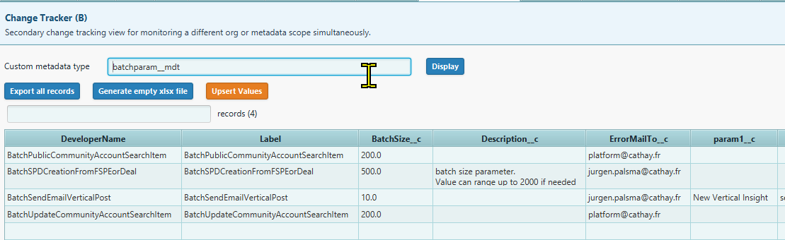

Browse, edit, and mass-upsert records of any Custom Metadata Type directly from an Excel file.
Select a __mdt type,
display all its records in a dynamic table, export them to an .xlsx workbook,
edit values offline, then push them back with a single Upsert. Supports row-level deletion and
filtered exports from the current selection.

| DeveloperName | Label | BatchSize__c | Description__c | ErrorMailTo__c | Param1__c | IsActive__c |
|---|---|---|---|---|---|---|
| BatchPublicCommunityAccountSearch | BatchPublicCommunityAccountSearch | 200.0 | platform@cathay.fr | true | ||
| BatchSPDCreationFromFSPEorDeal | BatchSPDCreationFromFSPEorDeal | 500.0 | batch size parameter. Value can range up to 2000 if needed | jurgen.palsma@cathay.fr | true | |
| BatchSendEmailVerticalPost | BatchSendEmailVerticalPost | 10.0 | Max emails per execution context | jurgen.palsma@cathay.fr | New Vertical Insight | true |
| BatchUpdateCommunityAccountSearch | BatchUpdateCommunityAccountSearch | 200.0 | platform@cathay.fr | true | ||
| BatchLeadConversionNightly | BatchLeadConversionNightly | 100.0 | Nightly lead conversion sweep — runs at 01:00 UTC | admin@cathay.fr | LeadSource=Web | false |
| BatchOpportunityStageSync | BatchOpportunityStageSync | 1000.0 | Syncs stage changes to downstream ERP system | platform@cathay.fr | ERP_ENDPOINT=https://erp.internal | true |
__mdt types found in the connected org.
Selecting a type immediately triggers a Display query.
;
for AND-style narrowing. The record count label updates in real time.
Id
from the org and opens the Lightning Setup page for that specific record in the default browser —
no copy-paste required.